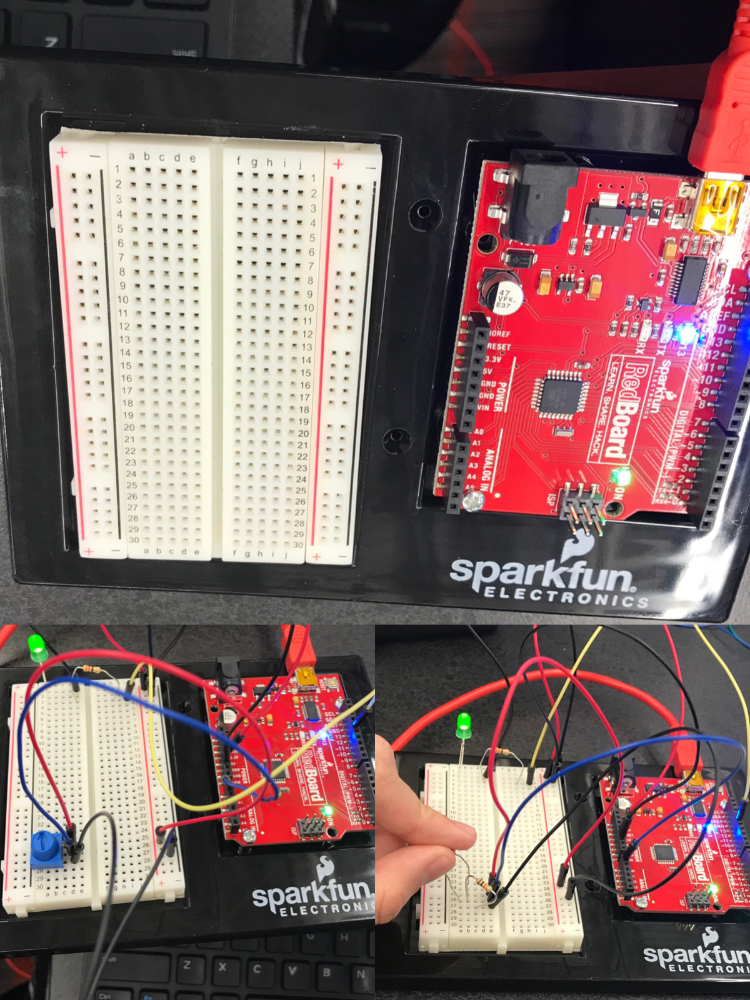
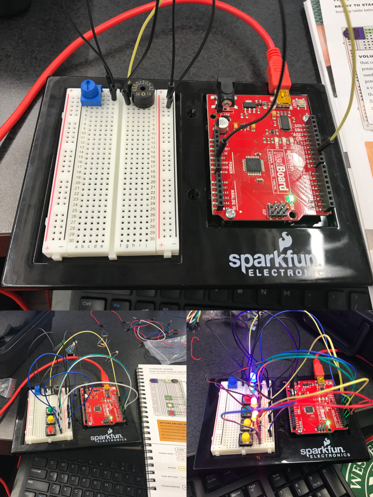
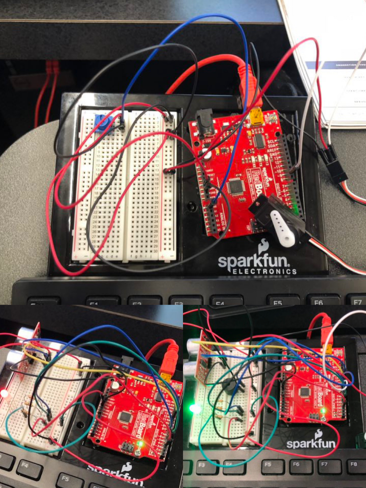
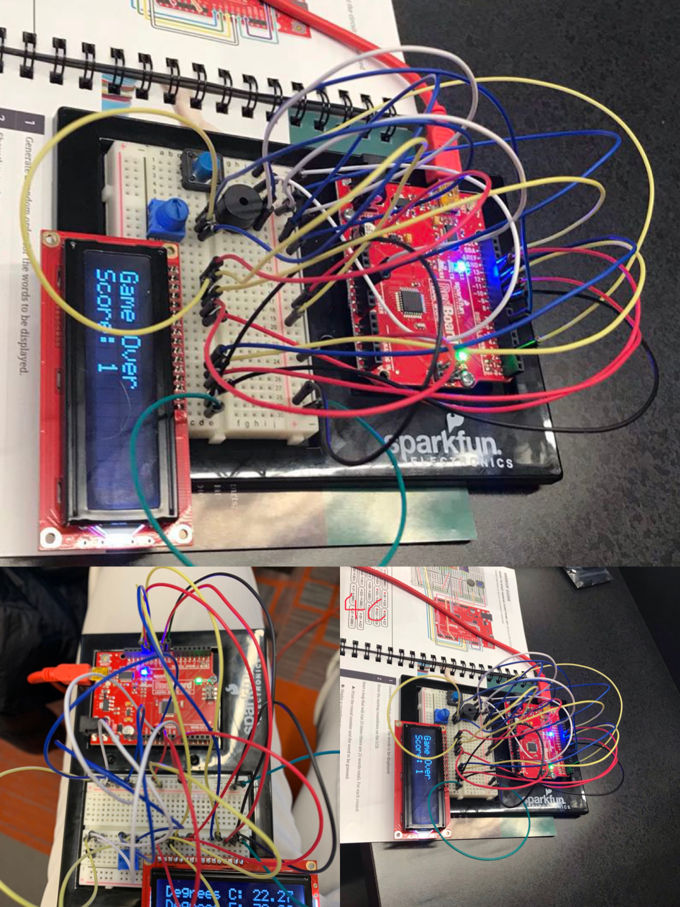
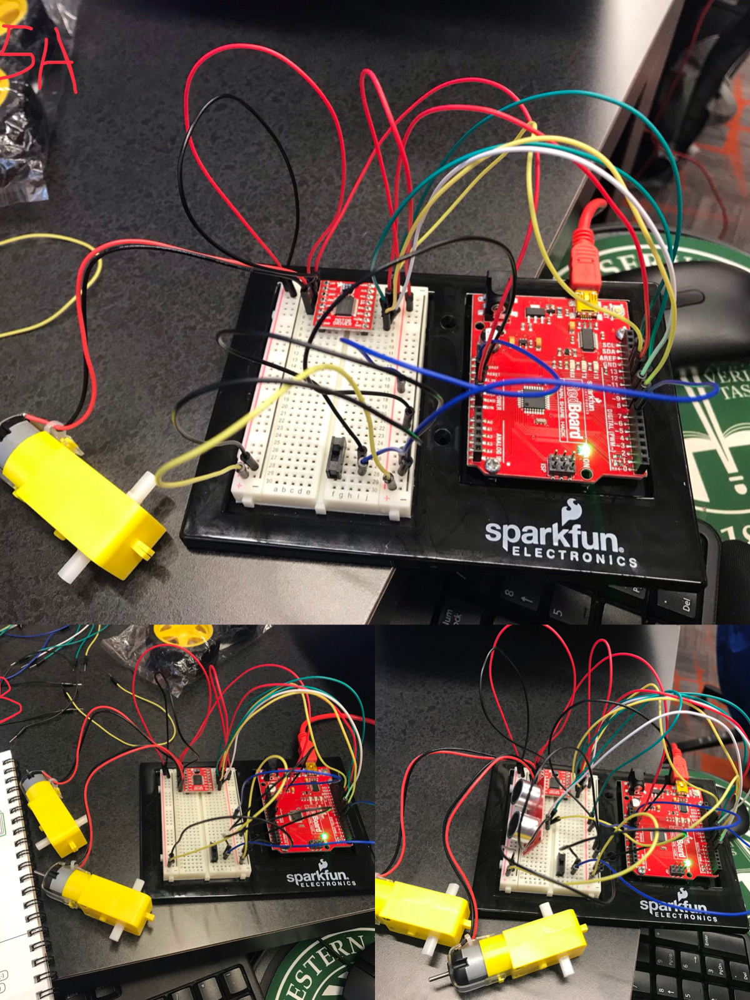

This week I used Sparkfun Electronics box to creat many fun things. During the process I find it hard to debug because the way I make things. I make each one of the fifteen pieces exactly the same as the one on the pictures, so if I made something wrong I need to go over everything again, since I do not know exactly the functions for each part. The coding part is the second hardest part.     